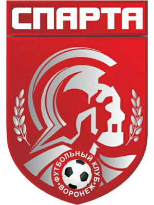

Опытные тренеры
Наставники с практическим опытом и индивидуальным подходом к каждому игроку.

Футбольный клуб Спарта
Футбол для детей с 4 до 17 лет. Развиваем спортивные навыки, командный дух и уверенность на поле. Тренировки под руководством опытных наставников.
О клубе
«Спарта» — это футбольное сообщество, где каждый игрок получает возможность развиваться, ставить цели и добиваться результата вместе с командой.
Мы создаём условия для регулярных тренировок, участия в соревнованиях и формирования сильного спортивного характера.
Присоединиться к командеНаш подход
Помогаем игрокам раскрывать потенциал и получать удовольствие от футбола на каждом этапе развития.
Наставники с практическим опытом и индивидуальным подходом к каждому игроку.
Последовательная программа занятий для развития техники, скорости и игрового мышления.
Учимся взаимодействовать, поддерживать друг друга и достигать целей вместе.
Участие в турнирах и контрольных играх помогает применять навыки на практике.
Первый шаг
Оставьте заявку — мы ответим на вопросы и подберём подходящий формат тренировок.
Позвоните нам по телефону или оставьте заявку на обратный звонок
Обсудим цели, уровень подготовки и ответим на ваши вопросы.
Выберите удобное время и начните свой путь в команде.
Где мы находимся
Свяжитесь с нами
Позвоните нам, чтобы узнать расписание тренировок, стоимость занятий и записаться на пробную тренировку.
Мы во «ВКонтакте» Новости клуба и расписание →Запись на тренировку
Нажимая на кнопку, вы соглашаетесь на обработку персональных данных.